Graph partitioning: Edge separator

Prof David Bindel
Please click the play button below.
Common idea: partition static data (or networked things):
Goal: Keep chunks big, minimize the “surface area” between
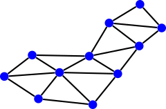
Given: \(G = (V,E)\), possibly with weights and coordinates.
We want to partition \(G\) into \(k\) pieces such that
Important special case: \(k = 2\).
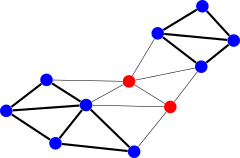
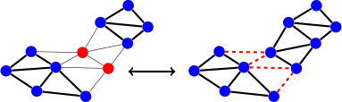
Can convert between node and edge separators
Fine if graph is degree bounded (e.g. near-neighbor meshes).
Optimal vertex/edge separators very different for social networks!
How many partitionings are there? If \(n\) is even, \[ \begin{pmatrix} n \\ n/2 \end{pmatrix} = \frac{n!}{( (n/2)! )^2} \approx 2^n \sqrt{2/(\pi n)}. \] Finding the optimal one is NP-complete.
We need heuristics!
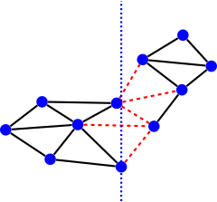
Idea: Cut with hyperplane parallel to a coordinate axis.
Idea: Optimize cutting hyperplane based on vertex density \[\begin{aligned} \bar{\mathbf{x}} &= \frac{1}{n} \sum_{i=1}^n \mathbf{x}_i \\ \bar{\mathbf{r}_i} &= \mathbf{x}_i-\bar{\mathbf{x}} \\ \mathbf{I}&= \sum_{i=1}^n\left[ \|\mathbf{r}_i\|^2 I - \mathbf{r}_i \mathbf{r}_i^T \right] \end{aligned}\] Let \((\lambda_n, \mathbf{n})\) be the minimal eigenpair for the inertia tensor \(\mathbf{I}\), and choose the hyperplane through \(\bar{\mathbf{x}}\) with normal \(\mathbf{n}\).
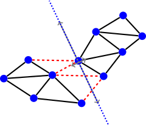
May choose best of several random great circles.
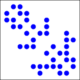
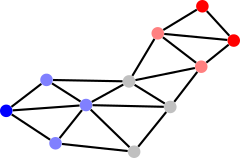
Label vertex \(i\) with \(x_i = \pm 1\). We want to minimize \[\mbox{edges cut} = \frac{1}{4} \sum_{(i,j) \in E} (x_i-x_j)^2\] subject to the even partition requirement \[\sum_i x_i = 0.\] But this is NP hard, so we need a trick.
Write \[\mbox{edges cut} = \frac{1}{4} \sum_{(i,j) \in E} (x_i-x_j)^2 = \frac{1}{4} \|Cx\|^2 = \frac{1}{4} x^T L x \] where \(C\) is the incidence matrix and \(L = C^T C\) is the graph Laplacian: \[\begin{aligned} C_{ij} &= \begin{cases} 1, & e_j = (i,k) \\ -1, & e_j = (k,i) \\ 0, & \mbox{otherwise}, \end{cases} & L_{ij} &= \begin{cases} d(i), & i = j \\ -1, & i \neq j, (i,j) \in E, \\ 0, & \mbox{otherwise}. \end{cases} \end{aligned}\] Note that \(C e = 0\) (so \(L e = 0\)), \(e = (1, 1, 1, \ldots, 1)^T\).
Now consider the relaxed problem with \(x \in \bbR^n\): \[\mbox{minimize } x^T L x \mbox{ s.t. } x^T e = 0 \mbox{ and } x^T x = 1.\] Equivalent to finding the second-smallest eigenvalue \(\lambda_2\) and corresponding eigenvector \(x\), also called the Fiedler vector. Partition according to sign of \(x_i\).
How to approximate \(x\)? Use a Krylov subspace method (Lanczos)! Expensive, but gives high-quality partitions.
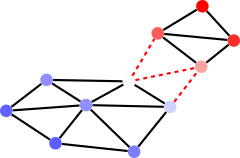
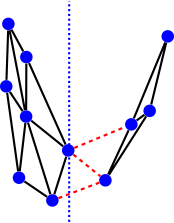
Alternate view: define a coordinate system with the first \(d\) non-trivial Laplacian eigenvectors.
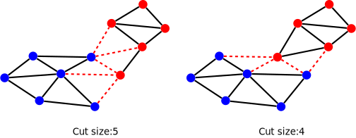
Gain from swapping \((a,b)\) is \(D(a) + D(b) - 2w(a,b)\), where
\(D\) is external - internal edge costs: \[\begin{aligned}
D(a) &= \sum_{b' \in B} w(a,b') - \sum_{a' \in A, a' \neq a} w(a,a') \\
D(b) &= \sum_{a' \in A} w(b,a') - \sum_{b' \in B, b' \neq b} w(b,b')
\end{aligned}\]
Start with a partition \(V = A \cup B\) and refine.
In one sweep:
̄ While no vertices marked
Choose \((a,b)\) with greatest gain
Update \(D(v)\) for all unmarked \(v\) as if \((a,b)\) were swapped
Mark \(a\) and \(b\) (but don’t swap)
Find \(j\) such that swaps \(1, \ldots, j\) yield maximal gain
Apply swaps \(1, \ldots, j\)
Usually converges in a few (2-6) sweeps. Each sweep is \(O(|V|^3)\). Can be improved to \(O(|E|)\) (Fiduccia, Mattheyses).
Further improvements (Karypis, Kumar): only consider vertices on boundary, don’t complete full sweep.
Basic idea (same will work in other contexts):
May apply recursively.
One idea for coarsening: maximal matchings
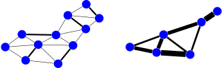
All these use some flavor(s) of multilevel:
Consider partitioning just for sparse matvec:
Some go beyond graph partitioning (e.g. hypergraph in Zoltan).
Additional work on:
Also: Classes of graphs with no small cuts (expanders)
Recall: partitioning for matvec and preconditioner
So far, considered problems with static interactions
Next time: more general load balancing issues